Time and Interrupts¶
delay() vs millis()¶
delay(ms)
-
The program stops for that time: it is blocking.
-
During
delay(1000)a button press is simply missed. -
Fine for tiny examples, a problem in real systems.
millis()
-
Returns the number of milliseconds since start-up (
unsigned long). -
Like a clock on the wall: you look at it and continue working.
-
Wraps to 0 after \(\approx\) 49.7 days (
micros(): after 71 minutes).
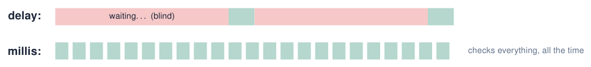
Sources: Embedded Programming, lectures 1–6
Non-blocking timing with millis()¶
const int LED_PIN = 2;
const unsigned long PERIOD_MS = 250;
unsigned long lastToggle = 0;
bool ledOn = false;
void setup() {
pinMode(LED_PIN, OUTPUT);
Serial.begin(115200);
}
void loop() {
unsigned long now = millis();
if (now - lastToggle >= PERIOD_MS) { // overflow-safe
lastToggle = now;
ledOn = !ledOn;
digitalWrite(LED_PIN, ledOn);
}
// loop stays free for other work: echo serial input
if (Serial.available()) Serial.write(Serial.read());
}
Why?
delay() freezes loop(): buttons, sensors and network are ignored meanwhile.
-
Pattern: “has enough time passed?”
-
now - last >= periodworks even whenmillis()wraps after \(\approx\) 49 days. -
Several independent “timers” in one
loop().
Flowchart: non-blocking timing with millis()¶
Try simulation: Arduino to flowchart
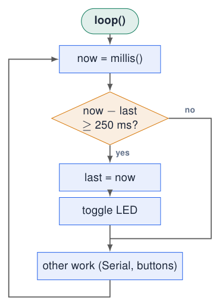
-
There is no waiting box: if it is not time yet, the no exit simply continues.
-
The whole loop takes microseconds and runs thousands of times per second.
-
Several timers = several of these diamonds, each with its own
lastvariable.
Compare with delay()
A delay(250) would be a box that blocks: during it, the other work never happens.
Several independent timers¶
Try simulation: Real-time challenge
const int LED_BLUE = 23, LED_RED = 21;
unsigned long lastBlue = 0, lastRed = 0, lastPrint = 0;
bool blueOn = false, redOn = false;
void setup() { Serial.begin(115200);
pinMode(LED_BLUE, OUTPUT); pinMode(LED_RED, OUTPUT); }
void loop() {
unsigned long now = millis();
if (now - lastBlue >= 300) { // every 300 ms
lastBlue = now;
blueOn = !blueOn;
digitalWrite(LED_BLUE, blueOn);
}
if (now - lastRed >= 1000) { // every 1 s
lastRed = now;
redOn = !redOn;
digitalWrite(LED_RED, redOn);
}
if (now - lastPrint >= 2000) { // every 2 s
lastPrint = now;
Serial.printf("uptime: %lu s\n", now / 1000);
}
}
-
Each job has its own “last time” variable.
-
The jobs do not wait for each other: impossible with
delay(). -
loop()runs thousands of times per second and every round asks “is it time?”.
Pattern to memorise
if (now - last >= interval) { last = now; \dots{} }
Sources: Lecture 2: function-specific timers Embedded Programming, lectures 1–6
Polling vs interrupts¶
Polling: “has it happened yet?”
-
The program checks the input every round:
if (digitalRead(pin)) { \dots{} } -
Simple, but if
loop()is busy the event can be missed or handled late. -
Like checking the door every minute to see if someone is there.
Interrupt: “handle this now!”
-
The hardware watches the pin and interrupts the CPU when it changes.
-
The CPU pauses
loop(), runs a short function (the ISR), and continues. -
Like a doorbell: you react only when it rings.
Event-driven programming
Interrupts are used for fast or rare events: pulses from a sensor, a button that must never be missed, a timer tick, received data.
Sources: Embedded Programming, lectures 1–6
attachInterrupt(): connecting a pin to a function¶
(digitalPinToInterrupt(pin), isrName, mode);
(digitalPinToInterrupt(34), buttonISR, RISING);
-
“When pin 34 goes from LOW to HIGH, immediately run
buttonISR().” -
Notice: no parentheses after
buttonISR! We pass the address of the function, we do not call it ourselves (&buttonISRmeans the same). -
Any GPIO of the ESP32 can trigger an interrupt.
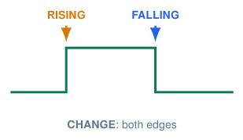
RISING |
LOW \(\rightarrow\) HIGH |
FALLING |
HIGH \(\rightarrow\) LOW |
CHANGE |
any edge |
Sources: Embedded Programming, lectures 1–6
Two button circuits: the same press, opposite edges¶
Pull-down: active HIGH
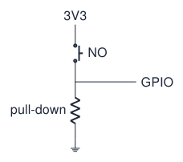
-
Released: resistor holds the input
LOW. -
Pressed: contact connects it to 3.3 V, so
HIGH. -
Press =
RISING; release =FALLING.
Pull-up: active LOW
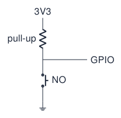
-
Released: resistor holds the input
HIGH. -
Pressed: contact connects it to GND, so
LOW. -
Press =
FALLING; release =RISING.
NO = normally open
These contacts are open when the button is released. The course board uses the left-hand arrangement: KEY1/KEY2 are active HIGH.
Sources: Course-board schematic; GPIO API Embedded Programming, lectures 1–6; Arduino ESP32 Core Documentation
Choose the mode from contact type and wiring¶
Normal means the button is released: NO = open, NC = closed.
Choose in this order
Identify the contact and resistor, determine the released and pressed levels, then select the edge for the event you want. A press does not always mean FALLING.
Momentary versus latching
A momentary push button returns when released. A latching switch holds its new position; interrupt edges still follow the resulting GPIO voltage changes.
Read the waveform: press, release or both?¶
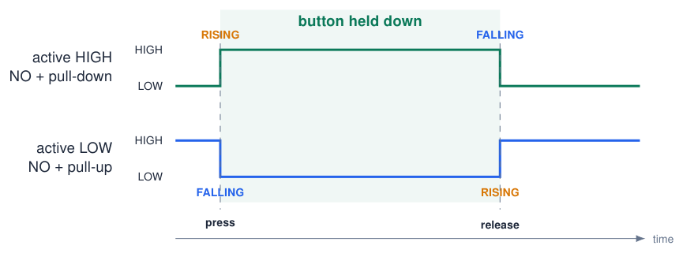
CHANGE detects both edges
An ideal press-and-release cycle produces two events with CHANGE. Holding the button produces no further edges. Contact bounce can produce extra events in any edge mode: choosing RISING or FALLING is not debounce.
Configure the input and the interrupt separately¶
Course board: KEY1 (GPIO34)
// Configuration fragment: NO button to 3V3,
// external pull-down already on the board.
void setup() {
pinMode(34, INPUT);
attachInterrupt(digitalPinToInterrupt(34),
onPress, RISING);
}
-
External pull-down: use
INPUT. GPIO34/35 have no internal pull resistors. -
To handle release instead, choose
FALLING.
Breadboard: GPIO25 to GND
// Alternative configuration fragment:
// use an internal pull-up on GPIO25.
void setup() {
pinMode(25, INPUT_PULLUP);
attachInterrupt(digitalPinToInterrupt(25),
onPress, FALLING);
}
-
INPUT_PULLUP: released HIGH; pressing connects the input to GND. -
To handle release instead, choose
RISING.
Two different choices
An external pull-up/down already supplies the bias: use INPUT. INPUT_PULLUP and INPUT_PULLDOWN enable internal resistors; attachInterrupt() selects the edge. These alternative setup fragments assume a short ISR named onPress. Pass its name without parentheses; handle the signalled work in loop().
Sources: GPIO and interrupt configuration Arduino ESP32 Core Documentation; ESP-IDF Programming Guide: GPIO & RTC GPIO (ESP32)
What happens when an interrupt fires¶
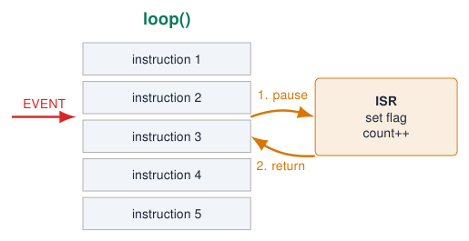
-
The event happens (edge on the pin).
-
The CPU finishes the current instruction and stops
loop(). -
It saves where it was and runs the ISR (Interrupt Service Routine).
-
It returns to exactly the next instruction of
loop().
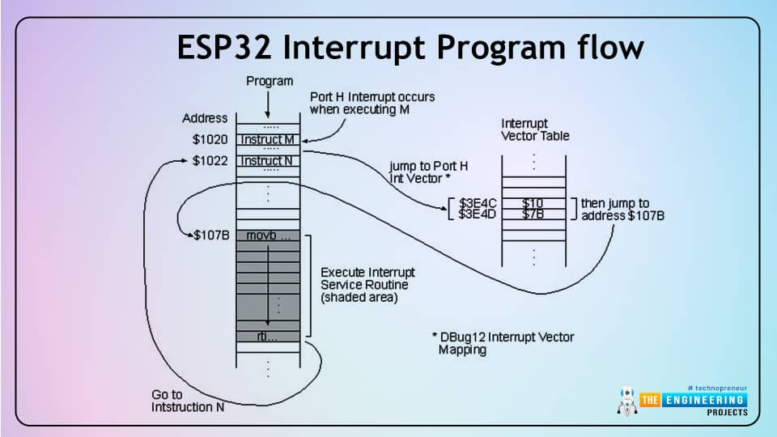
Sources: Figure: The Engineering Projects ESP32 Interrupts, via lecture 3
Writing a good ISR: volatile and IRAM_ATTR¶
volatile bool buttonPressed = false;
void IRAM_ATTR buttonISR() {
buttonPressed = true;
}
volatile
-
Tells the compiler: this variable can change unexpectedly (in the ISR).
-
Without it, the compiler may keep a copy in a register and
loop()never sees the change. -
Not the same as “volatile memory” (RAM)!
IRAM_ATTR
-
Puts the ISR in internal RAM instead of flash: it can run immediately, even while flash is busy.
-
IRAM is small: only ISRs, not everything.
Keep ISRs short!
-
Other code (and other interrupts) is waiting.
-
Timing of the rest may go wrong.
-
Long ISRs can crash the board (watchdog).
-
No
Serial.print(), nodelay(): set a flag, do the work inloop().
Sources: Embedded Programming, lectures 1–6; ESP-IDF Programming Guide: GPIO & RTC GPIO (ESP32)
Example: a button interrupt on the course board¶
const int KEY1 = 34; // active HIGH
const int LED_GREEN = 22;
volatile bool pressedFlag = false;
volatile uint32_t pressCount = 0;
void IRAM_ATTR onKey1() {
pressedFlag = true; // short!
pressCount++;
}
void setup() {
Serial.begin(115200);
pinMode(KEY1, INPUT);
pinMode(LED_GREEN, OUTPUT);
attachInterrupt(digitalPinToInterrupt(KEY1), onKey1, RISING);
}
void loop() {
if (pressedFlag) { // handle the event here
pressedFlag = false;
digitalWrite(LED_GREEN, !digitalRead(LED_GREEN));
Serial.printf("presses: %lu\n", (unsigned long) pressCount);
}
delay(2000); // ISR still counts rising edges while loop waits
}
-
RISING: the course-board buttons are active HIGH. -
The ISR only sets a flag and counts.
-
loop()does the slow work (Serial, LED). -
The counter records rising edges, including bounce, during
delay(2000).
Experiment
Press several times during the delay: compare the edge count with the number of LED toggles. The Boolean flag merges events; debounce is still needed.
Flowchart: main loop and interrupt¶
Try simulation: Arduino to flowchart
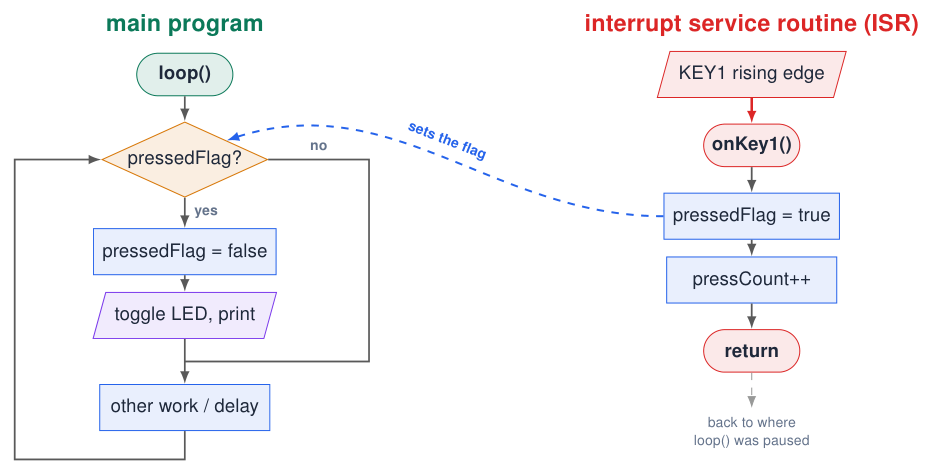
The ISR is a separate, short flowchart started by the hardware. It only sets a flag; the main program does the slow work.
Bouncing: one press, many edges¶
Try simulation: Button debouncing
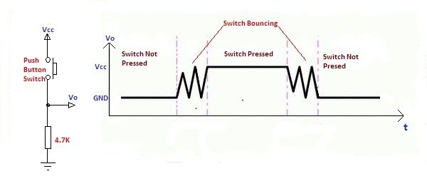
-
Mechanical contacts bounce for 1–20 ms when pressed or released.
-
An interrupt sees every bounce: one press can count as 3, 5, 10 presses.
-
Hardware fix: RC filter (the course board has 220 pF; often 10 k\(\Omega\) + 100 nF).
-
Software fix: ignore new edges for a short time after an accepted one.
Sources: Figure: electrosome.com, via lecture 3 Embedded Programming, lectures 1–6
Debouncing in software¶
Try simulation: Button debouncing
In the ISR (time stamp)
const unsigned long DEBOUNCE_MS = 50;
volatile unsigned long lastPressTime = 0;
volatile uint32_t presses = 0;
void IRAM_ATTR onKey1() {
unsigned long now = millis();
if (now - lastPressTime > DEBOUNCE_MS) {
lastPressTime = now;
presses++; // valid press
}
}
Polling (stable for 30 ms)
const int KEY1 = 34;
int stable = LOW, lastRead = LOW;
unsigned long lastChange = 0;
void loop() {
int r = digitalRead(KEY1);
if (r != lastRead) { // moved
lastChange = millis();
lastRead = r;
}
if (millis() - lastChange > 30 && r != stable) {
stable = r; // accepted
if (stable == HIGH) Serial.println("press");
}
}
Choose
ISR version: reacts instantly, ignores bounces after the first edge. Polling version: accepts a new state only after it has been stable for a while.
Sources: Embedded Programming, lectures 1–6; Arduino Language Reference
Flowchart: software debounce¶
Try simulation: Button debouncing
Try simulation: Arduino to flowchart
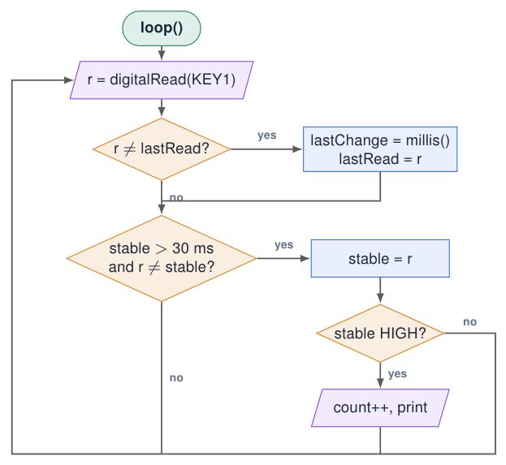
-
First diamond: did the contact move? Then restart the stopwatch.
-
Second diamond: has it been stable long enough and is it a new state?
-
Only then count the press: the bounces never reach the third diamond.
Hardware timers: interrupts from the clock¶
-
A timer counts clock ticks, independent of
loop(). -
When it reaches an alarm value, it fires an interrupt.
-
Precise periodic events: sample a sensor exactly every 1 ms, generate a signal, a clock tick.
-
The classic ESP32 used in this course has 4 general-purpose 64-bit hardware timers.
Period
period \(=\) alarm value \(/\) tick frequency \(= 500\,000 / 1\,000\,000 = 0.5\) s
Sources: Embedded Programming, lectures 1–6; Arduino ESP32 Core Documentation; Espressif Timer API: 4 timers on ESP32
Core 3.x: timerBegin() allocates an available timer¶
hw_timer_t *timer1 = nullptr;
hw_timer_t *timer2 = nullptr;
hw_timer_t *timer3 = nullptr;
hw_timer_t *timer4 = nullptr;
void setup() {
Serial.begin(115200);
timer1 = timerBegin(1000000);
timer2 = timerBegin(1000000);
timer3 = timerBegin(1000000);
timer4 = timerBegin(1000000);
}
void loop() {}
-
In Arduino-ESP32 Core 3.x, you do not manually select Timer 0, 1, 2 or 3. Each
timerBegin()allocates an available timer. -
1000000is the tick frequency in Hz, not a timer number: 1 MHz, or 1 \(\mu\)s per tick. -
timer1totimer4are variable names, not hardware timer IDs. -
This example targets the classic ESP32 with 4 timers; all four must be available. Other ESP32 variants may have fewer.
Allocation is separate from configuring an alarm
Check each returned pointer for nullptr: allocation can fail. Successful calls start the counters; no ISR runs until you configure an alarm and attach a handler. timerEnd(timer1) releases that timer for reuse.
Sources: Espressif Timer API; Core 3.3.11: timerBegin() implementation
Prescaler: divide the timer clock, not the CPU clock¶
Classic ESP32: 4 hardware timers, each with a 64-bit counter and a 16-bit prescaler.
\(f_{\rm tick}=\dfrac{f_{\rm clock}}{P} \qquad T_{\rm tick}=\dfrac{P}{f_{\rm clock}}\)
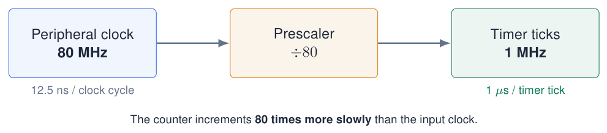
Arduino-ESP32 core 3.x: timerBegin(1000000) requests a 1 MHz tick rate; the driver selects the clock/divider. Here, an 80 MHz source gives \(P=80\).
The CPU keeps its own clock
The prescaler divides the clock received by the timer peripheral. It does not change the ESP32 CPU frequency.
Sources: Espressif Timer API: timer count, counter and prescaler; classic ESP32, APB-clock example
Prescaler trade-off: resolution versus counter range¶
Same 80 MHz source and same counter width; only the prescaler changes.
| \(P\) | Tick frequency | Time resolution | Time to wrap (relative) |
|---|---|---|---|
| 8 | 10 MHz | 0.1 \(\mu\)s | \(1\times\) |
| 80 | 1 MHz | 1 \(\mu\)s | \(10\times\) |
| 800 | 100 kHz | 10 \(\mu\)s | \(100\times\) |
Small prescaler
Fast counting, short ticks: finer time resolution. The counter reaches its maximum sooner.
Large prescaler
Slow counting, long ticks: coarser time resolution, but a longer interval before the counter reaches its limit.
For a \(B\)-bit up-counter starting at zero: \(\displaystyle T_{\rm wrap}=2^B T_{\rm tick}=\frac{2^B P}{f_{\rm clock}}\).
Wrap is not an alarm: wrap follows the largest counter value (\(2^B-1\)). A configured alarm can trigger and auto-reload much earlier, at \(N\) ticks: \(T_{\rm alarm}=N T_{\rm tick}\). The classic ESP32 counter has \(B=64\).
Sources: Espressif Timer API; calculated examples for an 80 MHz timer clock
Ticks, frequency and timer intervals¶
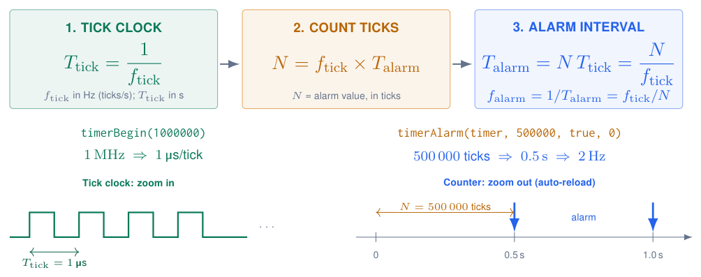
Info
timerBegin() sets the timer tick frequency, not the CPU clock. If an LED toggles once per alarm, one full blink needs two alarms: \(f_{\rm LED}=f_{\rm alarm}/2=1\,\mathrm{Hz}\) in this example.
Sources: Arduino-ESP32 Timer API (core 3.x)
The timer counter: a sawtooth, an alarm and an ISR¶
\(f_{\rm tick}=2000\,\mathrm{Hz}\); \(N=2000\) ticks
\(T_{\rm alarm}=N/f_{\rm tick}=1\,\mathrm{s}\); \(f_{\rm ISR}=1\,\mathrm{Hz}\).
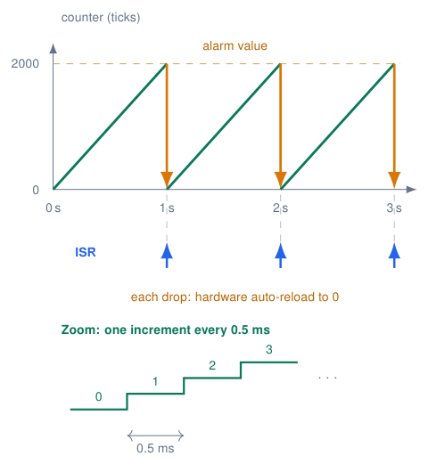
What happens at the top?
Reaching 2000 triggers the alarm: hardware reloads 0 and requests the ISR. The ISR does not reset the counter. Ramps are simplified; interrupt latency is not drawn.
Open Serial Plotter, 115200 baud. Count climbs once per second; ISR is a short marker printed by the next loop() iteration.
Sources: Arduino-ESP32 Timer API; classic ESP32, core 3.x; illustrative timing
timerStop(), timerRestart() and timerStart()¶
Example: 1 MHz; alarm = 500 000 ticks = 0.5 s of counting after a reset.
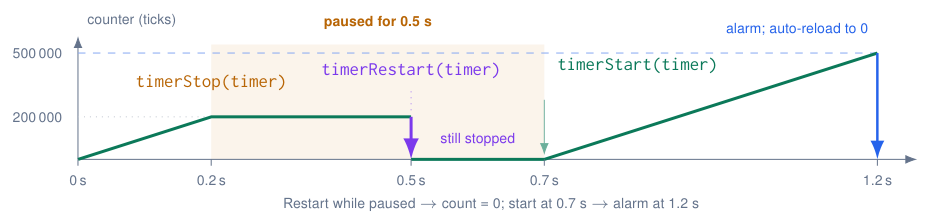
Start at the right moment
timerBegin() starts counting immediately. To configure before running: begin \(\rightarrow\) stop \(\rightarrow\) configure \(\rightarrow\) restart \(\rightarrow\) start. Paused time does not count towards the next alarm.
Sources: Timer API; Arduino-ESP32 3.3.11 implementation; illustrative timing
Hardware timers¶
hw_timer_t *timer = nullptr;
volatile bool tick = false;
const int LED_PIN = 2;
bool ledOn = false;
void ARDUINO_ISR_ATTR onTimer() { tick = true; }
void setup() {
pinMode(LED_PIN, OUTPUT);
timer = timerBegin(1000000); // 1 MHz: 1 tick = 1 us
timerStop(timer); // pause while configuring
timerAttachInterrupt(timer, &onTimer);
// 0.5 s alarm, auto-reload, repeat forever:
timerAlarm(timer, 500000, true, 0);
timerRestart(timer); // reset count to zero
timerStart(timer); // start counting now
}
void loop() {
if (tick) {
tick = false;
ledOn = !ledOn;
digitalWrite(LED_PIN, ledOn);
}
}
-
4 general-purpose 64-bit timers.
-
Precise, jitter-free periodic events: sampling an ADC at a fixed rate, generating signals.
-
Period \(= \text{alarm} / f_{\text{timer}}\).
API changed in core 3.x
Old: timerBegin(0, 80, true) + timerAlarmWrite() + timerAlarmEnable().
Sources: Migration from Arduino ESP32 Core 2.x to 3.0
Ticker: timers made easy¶
#include <Ticker.h>
Ticker sensorTicker;
Ticker ledTicker;
const int LED_BLUE = 23;
bool ledOn = false;
void blinkLed() {
ledOn = !ledOn;
digitalWrite(LED_BLUE, ledOn);
}
void readSensor() {
Serial.println(analogRead(36));
}
void setup() {
Serial.begin(115200);
pinMode(LED_BLUE, OUTPUT);
ledTicker.attach(0.5, blinkLed); // every 0.5 s
sensorTicker.attach_ms(100, readSensor); // every 100 ms
}
void loop() {} // empty: the tickers do the work
-
Tickeris part of the ESP32 core: no installation. -
attach(seconds, fn),attach_ms(ms, fn): repeat. -
once(seconds, fn): run once, e.g. a timeout. -
detach(): stop.
Still keep them short
Ticker callbacks run in a shared timer context: no long delay() inside, or other tickers are delayed.
Sources: Example from lecture 3 Embedded Programming, lectures 1–6
How precise is time?¶
-
All timing comes from a 40 MHz quartz crystal.
-
A typical crystal has a tolerance of \(\pm\)10–20 ppm (parts per million).
-
\(20 \cdot 10^{-6} \times 86\,400\) s \(\approx\) 1.7 s per day.
-
Prescalers, clock synchronisation and temperature effects: out of scope for this course.
Need real clock time?
Use NTP over Wi-Fi (configTime()) or an external RTC chip (DS3231) instead of counting millis().
millis() vs timer
millis(): good to \(\approx\) 1 ms, depends on how often loop() checks. Hardware timer: μs precise, independent of loop().
Sources: Embedded Programming, lectures 1–6; ESP32 Series Datasheet
Priorities, watchdogs and race conditions¶
Priorities and watchdogs
-
Several interrupts can be pending: they are handled in order of priority.
-
A watchdog timer checks that the system is still alive and that ISRs are not too long. If not: reset.
-
Message:
Interrupt wdt timeout on CPU1\(\Rightarrow\) your ISR was too long or blocked.
Race conditions
-
The result depends on the timing or order of events that use shared data.
-
Two interrupts update the same variable.
-
A timer event occurs while
loop()is changing the state. -
Hard to find: the bug appears “sometimes”.
Simple rules
Let one side write a shared variable; keep shared variables small (bool, 32-bit); use flags; do all real work in loop().
Sources: Embedded Programming, lectures 1–6
Example: a race condition and its fix¶
Bug: a pulse can be lost
volatile uint32_t pulses = 0;
void IRAM_ATTR onPulse() { pulses++; }
void loop() {
delay(1000);
Serial.println(pulses); // ISR may fire...
pulses = 0; // ...here: lost!
}
Fix: only the ISR writes
volatile uint32_t pulses = 0;
uint32_t lastPulses = 0;
void IRAM_ATTR onPulse() { pulses++; }
void loop() {
delay(1000);
uint32_t now = pulses; // 1 read
Serial.println(now - lastPulses);
lastPulses = now; // our copy
}
-
Left: between printing and resetting, an interrupt can increment
pulses; the reset erases it. -
Right:
loop()never writespulses. It reads it once (a 32-bit read is atomic on the ESP32) and works with the difference.
Sources: Race conditions: lecture 6 Embedded Programming, lectures 1–6
Quiz: time and interrupts¶
-
Why is
now - last >= intervalbetter thannow >= last + interval?Check your answer
The subtraction keeps working when
millis()wraps around after 49.7 days. -
What goes wrong if the ISR variable is not
volatile?Check your answer
The compiler may cache it:
loop()never sees the ISR's change. -
attachInterrupt(digitalPinToInterrupt(34), onKey(), RISING);does not compile. Why?Check your answer
onKey()calls the function; pass its address:onKey. -
One press on the button gives 4 counts. Name two fixes.
Check your answer
RC filter in hardware; software debounce (ignore edges for \(\approx\) 50 ms).
-
Timer with
timerBegin(1000000)andtimerAlarm(timer, 250000, true, 0): frequency?Check your answer
Period 0.25 s \(\Rightarrow\) 4 Hz.
Exercises: time and interrupts¶
Try simulation: Real-time challenge
Exercise 1 – Two blinkers, one button
Blue blinks at 2 Hz, red at 0.5 Hz, and KEY1 toggles the green LED immediately: no delay() allowed.
Exercise 2 – Reaction-time game
After a random wait (2–5 s) the orange LED lights. Measure the time until KEY1 is pressed (interrupt + millis()); detect cheating (press before the LED).
Exercise 3 – Frequency counter
Count rising edges on a GPIO with an interrupt and print the frequency every second using a hardware timer. Test it with a PWM output of a second pin.
Exercise 4 – Kitchen timer
KEY1 adds 10 s, KEY2 starts/stops; LEDs show progress; the red LED blinks when time is up. Compare with the dashboard experiment.